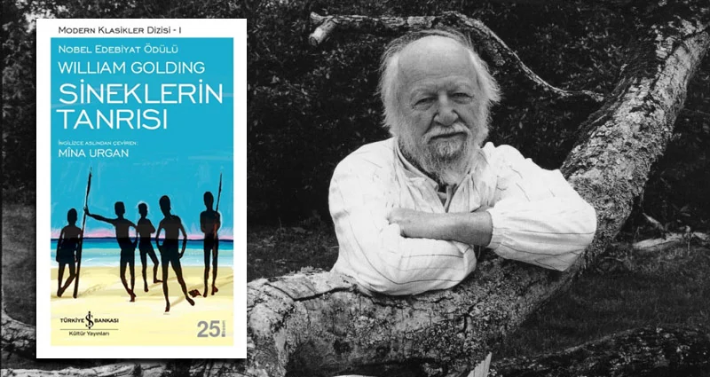

Bir uçak düşüyor. Yolcular çocuk. Hayatta kalanlar ıssız, güzel bir mercan adasında yalnız kalıyor. Büyük yok, kural yok, devlet yok. Sadece çocuklar ve tropik bir cennet var. Peki ne oluyor? William Golding’in 1954’te yayımlanan Lord of the Flies — Türkçesiyle Sineklerin Tanrısı — bu soruya verilen bir yanıttır; ama yanıt beklediğinizden çok daha karanlıktır.
Golding, İkinci Dünya Savaşı’nın bitişinin üzerinden henüz dokuz yıl geçmişken bu kitabı yayımladı. Holokost’un, Hiroşima’nın ve milyonlarca insanın birbirine yaptıklarının yaşandığı bir dönemin tanığıydı. Ve bir soru sormak istedi: Bu şiddet, bu vahşet, medeniyetin çökmesiyle mi ortaya çıkıyor; yoksa medeniyet zaten kırılgan bir örtü olup altında her zaman hazır bekleyen bir şeyi mi örtüyor?
Kitap, yayımlandığında 21 yayınevinden ret aldı. Sonunda Faber & Faber tarafından basılan roman, kısa sürede İngiliz edebiyatının en önemli eserlerinden biri haline geldi. Golding, 1983’te Nobel Edebiyat Ödülü’nü kazandı. Nobel jürisi, romanlarının gerçekçi anlatı ustalığını mitin çeşitliliği ve evrenselliğiyle birleştirerek günümüz dünyasında insanlık durumunu aydınlattığını belirtti. Peki nasıl?
Bölüm 1: Kitabın Hikâyesi — Bir Cennet, Bir Kabus
Hikâye, nükleer bir savaş sırasında tahliye edilen İngiliz çocukları taşıyan bir uçağın düşmesiyle başlar. Hayatta kalanlar, ıssız ve güzel bir mercan adasına savrulur. Yetişkin yok, kural yok, beklenti yok. Tropik meyvelerin bolluğu, berrak deniz, yumuşak kum: Bir Robinson Crusoe masalının başlangıcı gibi görünür.
İlk buluşmada iki figür öne çıkar: Ralph ve Jack. Ralph, sarışın, karizmatik, düzenli düşünen biridir; ilk anda otomatik olarak lider seçilir. Jack ise koro grubunun başı olan, saldırgan enerjili, kızıl saçlı çocuktur; iktidara susamış, ancak henüz bu açlığını tam olarak fark etmemiştir. İkisi arasında, adanın ruhunu sembolize eden üçüncü bir figür daha vardır: Simon. Sessiz, sezgisel, mistik bir çocuk. Diğerleri oyun oynarken Simon ormana girer; doğayla derin ve sözsüz bir diyalog kurar.
Bir de Piggy var. Şişman, gözlüklü, akıllı ve toplumsal kurallara sıkı sıkıya bağlı. Piggy, medeniyetin sesidir; ama medeniyetin her zaman başka sesler tarafından susturulduğunu yavaş yavaş öğrenir.
Düzen Girişimi: Deniz Kabuğu ve Ateş
Ralph, adada bir düzen kurmaya çalışır. Konuşma hakkını sembolize eden deniz kabuğu (conch) bu düzenin simgesi olur: Kabukla kim konuşuyorsa söz onundur. Ateş yakılır; duman çıkararak kurtarılmayı beklemek için. Bu, medeniyetin iki temel unsurunu kapsayan bir plandır: söylem (konuşma hakkı) ve umut (kurtarılma isteği). Ralph, aslında küçük bir sosyal sözleşme tesis etmeye çalışır; Rousseau’nun hayal ettiği, Hobbes’un şüpheyle yaklaştığı türden bir uzlaşı.
Jack, avcılığa yönelir. Önce domuzları kovalar; başlangıçta bıçağı hayvanın üzerinde tutan Jack, öldüremez. Bir şey onu durdurur. Golding bu anı dikkatle anlatır: Jack’i durduran şey, kandan, etten ve ölümden duyduğu içgüdüsel çekinmedir. Bu çekinme, medeniyetin üzerine kazındığı katmandır. Ama yalnızca birkaç hafta içinde bu katman soyulur.
Canavar: İçeriden Gelen Korku
Adada bir canavar olduğuna dair söylentiler çocuklar arasında yayılmaya başlar. Küçüklerin rüyalarından çıkan bu korku, giderek somutlaşır. Bir noktada denizden çıkan paraşütlü bir asker cesedi canavarın ta kendisi sanılır. Ama Simon gerçeği kavrar: Canavar, dışarıda değil; içeridedir. Çocukların korkusu, yansımasını dışarıya yansıtıyordur.
“Belki de canavar yalnızca biz miyiz?” — Simon, Lord of the Flies, William Golding, 1954
Bu cümle kitabın felsefi merkezidir. Golding’in tüm anlatısı bu tek soruya doğru inşa edilmiştir.
Bölüm 2: Karakterler — Her Biri Bir İnsan Boyutunun Sembolü
Golding, karakterlerini gerçekçi bireyler olarak yaratırken aynı zamanda her birini insan ruhunun bir boyutunun sembolü haline getirir. Bu alegorik yapı, kitabın tek bir okumaya sığmayan derinliğini sağlar.
Ralph: Akıl ve Medeni Düzen
Ralph, Aydınlanma geleneğinin ürünüdür: Akla, düzene ve uzlaşıya inanır. Liderlik ona doğal ve neredeyse rahatsız edici biçimde gelir; ama bu rahatsızlık onun gücünü değil, aslında dürüstlüğünü simgeler. Ralph, iyilik yapmak ister; ama iyiliğin nasıl yapılacağını söyleyebilecek bir yetki alanı kurmakta giderek zorlanır.
Ralph’ın trajedisi, medeniyetin trajedisidir: Düzen, gönüllü uyuma ihtiyaç duyar. Gönüllü uyum azaldığında, düzen çöker. Ralph bunu tutmaya çalışır; ama elindeki araçlar — mantık, konuşma, kural — giderek yetersiz kalır. Kitabın sonunda Ralph yalnız, avlanan, ağlayan biridir. Ve bu ağlama, Golding’in yazdığı en güçlü cümlelerden birine zemin hazırlar: Ralph, masumiyetin sonu ve insan kalbindeki karanlık için ağlar.
Jack: İktidar, İçgüdü ve Ritüelin Yükselişi
Jack, en yavaş ama en tam dönüşümü yaşayan karakterdir. Koro grubunun disiplinli lideri olarak başlar; ama adadaki otorite boşluğunu fark ettiğinde içindeki bir şey serbest kalır. Avcılık onun için önce pratik bir ihtiyaç, sonra bir zevk, sonra bir kimlik olur. Yüzleri boya ile boyayan Jack, bir ritüel kurar; takım ruhu ve korku üzerine inşa edilmiş ilkel bir otorite.
Jack’in kabilesi giderek güçlenir çünkü sunduğu şey somuttur: et, eğlence, ait olma hissi. Ralph’ın sunduğu şeyler ise soyuttur: ateş, duman, kurtarılma umudu. Golding burada siyaset biliminin temel paradoksunu sahneye taşır: Uzun vadeli akıl, kısa vadeli içgüdüye karşı her zaman kaybeder. Popülizm her devirde bu yasadan beslenir.
Jack, totaliter bir lider portresidir. Korku ve itaat talep eder. Farklı düşüneni dışlar. Ritüeli gerçeğin yerine koyar. Ve kitleyi teklif ettiği vahşi özgürlüğün içinde tutar.
Simon: Sezgi, Kehanet ve Kurban
Simon, kitabın en tartışmalı ve en derin karakteridir. Bayılma nöbetleri geçirir; birçok okur bunu epilepsi olarak yorumlar ve bu nöbetler eskiçağ geleneğinde kutsala açılan kapılar sayılırdı. Diğer çocuklar ormanı tehlikeli ve karanlık bulurken Simon yalnız ormana girer, doğayla sessizce bütünleşir; çünkü o, ormanda diğer çocuklardan çok daha güvende olduğunu sezgisel olarak kavramıştır.
Simon’ın en çarpıcı anı, Bölüm 7’deki kehanet sahnesidir. Ralph, adadan hiç kurtulamayacaklarını düşünerek umutsuzluğa kapılmıştır. Tam bu sırada Simon, ona döner ve sessizce şöyle der:
“Her şeye rağmen. Sen sağ salim eve dönersin. Öyle olacağını düşünüyorum.” — Simon, Bölüm 7, Lord of the Flies
(“You’ll get back all right. I think so, anyway.”)
Bu cümle, kitabın en ince ve en ürkütücü satırlarından biridir. Simon “sen” der; “biz” demez. Bu tek kelimelik fark, kendi kaderini çoktan kabul ettiğini gösterir: Adadan çıkacak olan Ralph’tır, Simon değil. Pek çok eleştirmen bu satırı, Simon’ın peygambervari sezgisinin ve kendi ölümünü önceden hissetmesinin en açık kanıtı olarak okur. Nitekim kehanet doğru çıkar: Ralph son sahnede bir deniz subayı tarafından kurtarılır. Simon ise çok önce, gerçeği haykırmaya çalışırken linç edilmiştir. Ve Ralph’ın zihninde — son bölümdeki ölüm kovalamacasında — Simon’ın o sessiz cümlesi yeniden çınlar.
Simon aynı zamanda merhametin de simgesidir. Jack, avladığı eti Piggy’e vermediğinde, Simon kendi payını sessizce kaldırıp Domuzcuk’un önüne koyar. Kalabalığın ortasında, söz söylemeden yapılan bu jest, Golding’in Simon’a yüklediği Mesih-figürü boyutunun somut bir anıdır.
Simon, Sineklerin Tanrısı’yla — domuzun çürümekte olan kafasıyla — bir tür içsel diyalog yaşar. Bu diyalogda ses ona, canavarın avlanıp öldürülebilecek bir şey olmadığını ve kendisinin insanın bir parçası olduğunu söyler. Simon gerçeği bulmuştur: Canavar dışarıda değil, insanın içindeki karanlıktır. Bu bilgiyi çocuklara götürmek için koşar. Ama karanlıkta koşan Simon, canavarın ta kendisi sanılır. Kör bir öfkeyle linç edilir.
Simon’un ölümü, Golding’in anlatısına en net Hristiyan katmanını katar: O, gerçeği taşıyan ve bu gerçek yüzünden öldürülen figürdür. Ama Golding bir Hristiyan öğütçüsü değil; bir gerçekçidir. Simon’ın şehitliği kurtuluş getirmez; yalnızca onun da öteki çocuklar gibi ne kadar savunmasız olduğunu gösterir.
Piggy (Domuzcuk): Aklın Sesi ve Ralph’ın Görünmez Temeli
Golding, bu karakterin gerçek adını hiç vermez. Kitap boyunca ona yalnızca Piggy — Domuzcuk — denir. Bu lakap, diğer çocukların ona reva gördüğü zalimce bir etiketlemedir: Şişman, pembe tenli, nefes nefese kalan biri. Ama Golding bu adı seçerken kasıtlıdır ve ironi derindir: Roman boyunca avlanan, ritüele kurban edilen, öldürülen şey domuzlardır. Ve Domuzcuk da tam olarak bu kaderi paylaşır. Adı, onun sonunu en başından kodlamıştır.
Piggy, kitabın en zeki karakteridir; ama hiçbir zaman dinlenmez. Toplumsal normları anlar, gözlükleri ateş yakmak için kritik önem taşır ve deniz kabuğuna en içten bağlıdır. Önyargılar onu baştan dışlar: sınıfsal kökeni, bedeni, aksanı. Entelektüel cesareti ise hiçbir zaman itibar görmez.
Piggy’nin Ralph’a olan desteği ise kitabın en az konuşulan ama en önemli ilişkilerinden biridir. Ralph, karizmatik ve doğal liderdir; ama stratejik zekâsı sınırlıdır. Piggy, arka planda onu besler: Onu doğru sorularla tetikler, hangi adımın atılması gerektiğini fısıldar, kabuğun ne zaman kullanılacağını hatırlatır. Jack’ten duyduğu korku hakkında söyledikleri bu dinamiği açıkça gösterir: insan korktuğu birinden nefret eder ama onu düşünmeyi bırakamaz. Bu tespit, Ralph’a Jack’i nasıl okuması gerektiğini sessizce öğretir.
Piggy’nin ölümü, deniz kabuğunun parçalanmasıyla aynı anda gelir. Bu eş zamanlılık tesadüf değildir: Konuşma hakkı ve akıl kaybolduğunda, onları savunan insan da yaşayamaz. Ve Ralph, Piggy öldüğünde yalnız kalmaz yalnızca; stratejik pusulasını da yitirir. Golding, burada medeniyetin kurumlarını simgesel olarak yerle bir eder.
Bölüm 3: Mercan Adası ve Britanya’nın Gölgesi
Kitabın yazıldığı bağlam göz ardı edilirse anlamının büyük bir kısmı kaybolur. Kitap 1954’te yayımlandığında İkinci Dünya Savaşı henüz hafızalardaydı; İngiliz İmparatorluğu çözülüyordu; Soğuk Savaş yüksek bir nükleer tehdit rüzgârıyla esiyordu. Uçaktaki çocuklar İngilizdir: Dünyanın en köklü medeniyetlerinden birinin çocukları. Ve bu çocuklar birkaç hafta içinde birbirlerini öldürmeye başlarlar.
Bu, kasıtlı bir provokasyondur. Golding şunu der: Medeniyet, sahicilikten değil; koşullardan beslenir. Koşullar değiştiğinde — yetişkin gözü olmadığında, ceza mekanizması işlemediğinde, toplumsal baskı kalktığında — ne kalır? Golding’in yanıtı pesimisttir: Altında her zaman bekleyen bir şey kalır.
Kitap aynı zamanda İngiltere’nin sömürgeci kendine güvenini de sorgular. İngiliz çocukları, başka halkları “medenileştirmek” iddiasıyla ada ada gezen bir imparatorluğun torunlarıdır. Ama kendi başlarına bırakıldığında — denetim olmadan — kurulu medeniyetin çöktüğü görülür. Bu ironi, kitabı salt psikolojik bir analizden çıkarır ve siyasi bir eleştiriye dönüştürür.
Bölüm 4: Golding’in Felsefesi — Karanlığın Kökeni
William Gerald Golding (1911–1993), Oxford’da İngiliz edebiyatı okudu; İkinci Dünya Savaşı’nda Kraliyet Donanması’nda subay olarak görev yaptı. D-Day çıkarmasına katıldı. Bu deneyimler onu dönüştürdü. Savaştan önce insan doğasına nispeten iyimser bakan Golding, savaştan çıktığında kalıcı bir karamserlikle yazmaya başladı.
Golding’in temel felsefi tezi şudur: Kötülük, insanlığın doğasında içkindir. Medeniyet, bu içkin kötülüğü bastıran kırılgan bir yapıdır. Yeterince güçlü bir baskı altında — savaş, açlık, yalnızlık, denetimsizlik — bu yapı çöker ve altındaki gerçek yüzeye çıkar.
Bu, Hobbes’un “insan insanın kurdudur” özdeyişiyle özetlenen görüşüne yakındır. Thomas Hobbes, 1651’de Leviathan’da şunu savunmuştu: Doğa durumunda insan yaşamı yalnız, yoksul, kötü, vahşi ve kısadır. Devlet ve sosyal sözleşme, bizi bu durumdan çıkaran yapay ama zorunlu bir araçtır. Golding, Hobbes’u bir roman biçiminde test eder ve aynı sonuca ulaşır.
Golding, aynı zamanda Rousseau’ya doğrudan karşı çıkar. Jean-Jacques Rousseau’ya atfedilen “soylu vahşi” fikri (terimi Rousseau kendisi kullanmamıştır) şunu savunur: İnsan doğası özünde iyidir; bizi bozan medeniyettir. Golding bu fikri tersine çevirir: Medeniyetten arındırılmış çocuklar, soylu vahşiye dönüşmez; kana susamış bir kabilenin üyelerine dönüşür. Rousseau yanılmıştır, der Golding — ve kanıtını bir mercan adasında gösterir.
Freudçu okuma da son derece bereketlidir: Adanın üç güç odağı, Freud’un psişik modeline neredeyse bire bir karşılık gelir. Ralph egodur: gerçekliği değerlendiren, uzlaştıran, ölçülü olan. Piggy süperegodur: toplumsal norm ve ahlaki yargının sesidir. Jack ve onun kabilesi ise iddir: bastırılmamış, anlık, içgüdüsel, haz odaklı. Kitap, id’in ego ve süperego’yu bastırmasının hikâyesidir; medeniyetin çöküşü, psişenin çöküşüdür.
Sineklerin Tanrısı: Simgenin Kendisi
Kitabın başlığı, İbranicede Baal-Zebub’dan türer: Şeytan’ın bir adıdır, “sineklerin efendisi” anlamında. Demonoloji geleneğinde Beelzebub çoğu kez kibir ve bozulmayla ilişkilendirilir. Golding bu adı seçerken mesajı açıktır: Çocukların yarattığı canavar, dışarıdan gelmez. Kendi içlerinden taşır; çürüyen etten çıkan sineklerin etrafında uçtuğu domuzu başa koyarak yarattıkları figür, kendi kötülüklerinin dışsallaşmasıdır.
Simon’ın bu kafa ile yaşadığı halüsinatif diyalog, Golding’in en cesur sahnesini oluşturur: Sineklerin Tanrısı, Simon’a kötülüğün dışarıda değil, onun içinde olduğunu hatırlatır. Şeytan içeridedir. Kovulamaz, adadan kaçılamaz; çünkü her çocukla birlikte adadır.
Bölüm 5: Sinema ve Ekran — Üç Uyarlama, Bir Soru
Sineklerin Tanrısı iki kez sinemaya, 2026’da ise ilk kez televizyona uyarlandı. Bu uyarlamalar kitabın farklı boyutlarını ön plana taşır ve birlikte düşünüldüğünde romanın hangi katmanlarının görsel anlatıya dirençli olduğunu da gösterir.
1963 Uyarlaması — Peter Brook
İngiliz yönetmen Peter Brook’un çektiği siyah-beyaz film, edebiyat uyarlamaları tarihinin en naif ve aynı zamanda en güçlü örneklerinden biridir. Brook, gerçek İngiliz çocukları oyuncu olarak kullandı ve doğaçlama sahneler çekti. Film, kitabın ham ve tedirgin edici havasını büyük ölçüde korur. Siyah-beyaz görüntü, tropik adanın güzelliğini bile tehditkâr bir belirsizliğe büründürür.
Brook’un yorumunda vurgu, çocukların değişiminin yavaşlığına ve kaçınılmazlığına yönelir. Simon’ın ölüm sahnesi, sinema tarihinin en sarsıcı linç anlarından biridir. Film, bugün hâlâ İngiltere ve ABD okullarında edebiyat derslerinin temel kaynakları arasında yer alır.
1990 Uyarlaması — Harry Hook
1990’da Harry Hook tarafından yeniden çekilen Amerikan yapımı uyarlama, hikâyeyi ABD askeri okulu öğrencilerine taşır. Bu tercih, kitabın İngiliz sınıf eleştirisini ve imparatorluk ironisini büyük ölçüde siler. Renkli görüntü, tropik adayı cennetten çok bir macera sahnesine dönüştürür; bu da anlatının varoluşsal ağırlığını azaltır.
Film, gişe açısından başarısız oldu ve eleştirmenler tarafından çoğunlukla kitabın yüzeysel bir yorumu olarak değerlendirildi. Yine de 1990 uyarlaması, kitabın evrensel uygulanabilirliğini göstermesi bakımından ilginçtir: İngiliz özel okul öğrencisi yerine Amerikalı askeri okul öğrencileri koyulduğunda da aynı dinamikler işler.
2026 Uyarlaması — BBC Dizisi
BBC’nin 2026’da yayımladığı dört bölümlük dizi, romanın ilk televizyon uyarlamasıdır. Senaryosunu Jack Thorne yazdı, yönetmenliğini Marc Munden üstlendi. Bölümlerin her biri bir karakterin adını taşır: Ralph, Piggy, Simon ve Jack. Dizi, 8 Şubat 2026’da BBC iPlayer’da yayına girdi ve Golding ailesinin desteğiyle hazırlandı.
Filmler ve Romanın Arasındaki Derin Uçurum
Her iki film de kitabın en önemli katmanını ekranda yeterince yansıtmakta güçlük çeker: iç ses. Golding’in romanı, karakterlerin zihnine girer; düşüncenin çözülüşünü, ahlaki yargının bulanıklaşmasını, dil ile eylem arasındaki kopmayı yavaş yavaş gösterir. Sinema bu süreci yalnızca eylemle anlatabilir; oysa asıl trajedi, eylemin başlamadan önce zihinlerde yaşanandır.
Bu nedenle Golding’i gerçekten anlamak için romanı okumak zorunludur. Filmler, hikâyenin dış kabuğunu gösterir; roman, çekirdeğini.
Bölüm 6: İnsan Doğası — Hobbes, Rousseau, Golding ve Günümüz
Golding’in kitabı, binlerce yıldır süren bir felsefi tartışmaya en sert katkılardan birini yapar: İnsan doğası özünde iyi mi, kötü mü?
Bu soruya verilen iki büyük yanıt, modern siyaset felsefesini de biçimlendirmiştir. Thomas Hobbes (1588–1679), devlet olmadan insanın her insana karşı savaş halinde olduğunu savundu. Devlet, bu savaşı sonlandıran gücü tekeline alan yapıdır; olmadan toplum mümkün değildir. Jean-Jacques Rousseau (1712–1778) ise tam tersini iddia etti: Doğa durumundaki insan özgür ve iyidir; onu bozan, onu rekabete, eşitsizliğe ve şiddete yönelten medeniyetin kendisidir. “Her şey Tanrı’nın elinden çıktığında iyidir; insan elinden geçince bozulur.”
Golding, bu iki kutbun ortasında değil; Hobbes’un yanındadır. Ama Hobbes’u da aşar: Hobbes için çözüm, devlettir; yani dışsal bir güçtür. Golding için kötülük o kadar köklüdür ki dışsal bir güç bile onu yalnızca bastırabilir, yok edemez. Kitabın finalinde kurtarma gemisinin subayı çıkageldiğinde çocuklar düzene geri döner; ama bu düzen sahte bir rahatlıktır. Subay giderse ne olacaktır? Ve subayın kendi gemisi, kendi savaşı, kendi vahşeti nerededir?
Günümüzde Golding’i Okumak: Neden Hâlâ Gerekli?
Günümüz dünyasında Sineklerin Tanrısı’nı okumak, bir tarih dersi değil; bir ayna tutma eylemidir. Sosyal medya algoritmalarının yarattığı kabile dinamikleri, siyasi kutuplaşmanın körüklediği dehumanizasyon, online linç kültürleri, “öteki”yi canavar olarak kodlama refleksi: Bunların hepsi, Golding’in 1954’te adada gösterdiği mekanizmaların dijital versiyonlarıdır.
Deniz kabuğu kırıldığında; yani söylemin, tartışmanın ve meşru itirazın alanı kapandığında, geriye ne kalır? Jack’in kabilesi. Her sistemde, her çağda, her teknolojide. Golding bunu adaya sıkıştırmıştır; ama ada, metafordur. Ada, insanlığın kendisidir.
Sonuç: Masumiyet Nerede Biter?
Kitabın son sayfası, edebi tarihin en yürek burkan kapanışlarından biridir. Kurtarma gemisinin subayı, yüzleri boyalı, mızrak taşıyan bir grubu görür ve şaşırır: “Bir sürü İngiliz çocuğu bu kadar berbat bir şey yapamaz.” Bu cümle hem karakter hem de okuyucu için bir tokat gibidir. Subay, romanın tüm boyunca anlattığı şeyin tam ortasında durmaktadır ve görmemektedir. Ya da görmek istememektedir.
Ralph ağlar. Golding bize şunu söyler: Ralph’ın gözyaşları masumiyetin sonu içindir; insan kalbinin karanlığı için, ve yanlış olan ama o güne kadar — biri onu aramadıkça — adı konulmayan bir dost olan Piggy’nin ölümü için.
Sineklerin Tanrısı, okuyucuya bir sonuç dayatmaz. Golding, düzeltme teklif etmez; çözüm önermez; umut vaat etmez. Yaptığı şey çok daha cesur: Bir mercek tutar. Mercek yakar. Ve yakarken şunu hatırlatır: Bu yangının yakıtı, senin içinde.
Konuyla bağlantılı yazılarımız: Distopya Neden Bizi Cezbediyor?, Dune Evreni: Çevre, Din ve İktidarın Zamansız Alegorisi, Antik Felsefe ve İnsan Doğası.